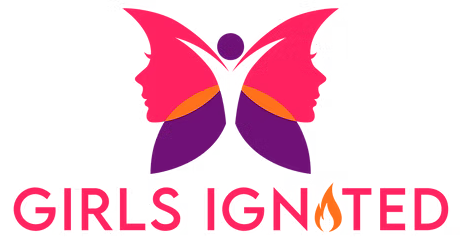
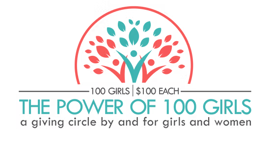
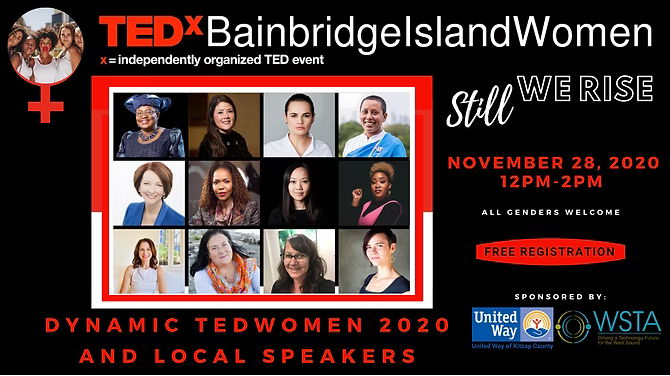
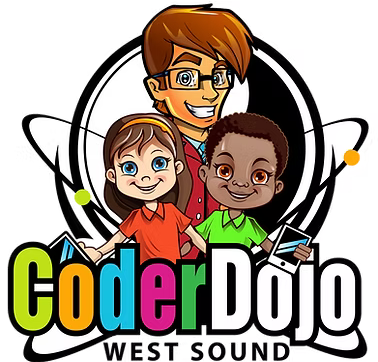
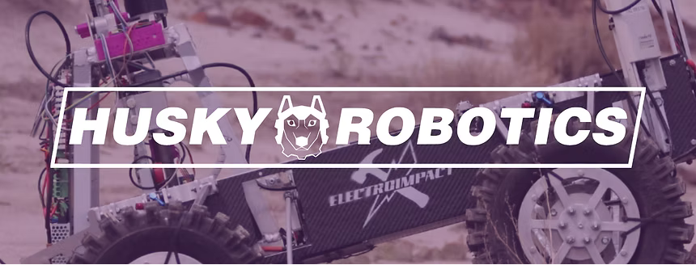
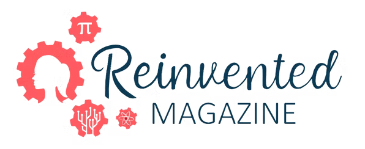
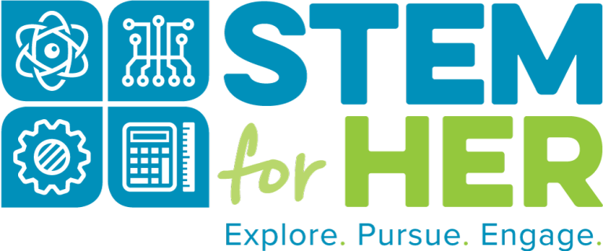

Organizations & Initiatives

GIGirls Ignited
2021 – PresentFounder
Platform featuring nominated girls and young women in leadership globally. Grew to 226,000+ followers. Nearly 300 young leaders featured. Hosted Changemakers Summit 2022. Evolved from Bainbridge Island Girl Up, founded December 2018.

THThe Power of 100 Girls
2020 – PresentFounder & Executive Director
Global giving circle providing grants to girls and young women in STEM and leadership. Fiscally sponsored by Hack+ in Silicon Valley. Over $6,000 awarded — grantees include NEST4US (VA), Redefine Z (CA), and Teen Talking Circles.

TETEDxBainbridgeIslandWomen
2020Founder, Licensee & Lead Organizer
Produced an intergenerational event showcasing 8 global and 2 local speakers. Theme: Still We Rise.

TEDxYouth@BainbridgeIsland
2019 – 2020Founder, Licensee & Lead Organizer
Six young speakers at Bainbridge Island Museum of Art. Theme: Youth in Action. All six talks approved for the global TEDx YouTube channel.

WEWest Sound CoderDojo
2015 – PresentYouth Mentor
Teaching coding and computational thinking since the dojo launched in March 2015. Over a decade across Kitsap County locations, including special Minecraft, Scratch, and AI mini-conference projects.

HRHusky Robotics — UW Mars Rover
2020 – 2021Chassis Subsystem
Member of UW's Mars Rover team, which placed 2nd in the world at the international Rover Challenge Series.

FIRST Robotics — Spartronics 4915
2018 – 2020Mechanics · Team Leadership · Quartermaster
Awards: District Engineering Inspiration Award (2019 & 2020), District Event Winner (2019), Industrial Design Award (2018). Participated in Girls Generation Robotics Competition on leadership and drive teams.

REReinvented Magazine
2019 – 2020Operations Team
Nation's first print STEM magazine by and for women. Joined at 14 as the youngest staff member. Represented at GeekWire Summit and GeekGirlCon 2019.

STSTEM for Her
2020 – 2022Virtual Programming Team & Panelist
Only West Coast participant on the programming panel. Collaborated on curriculum and programming strategy for girls in STEM.

Bainbridge Island Girl Up
2018 – 2021Founder & Chapter Leader
Founded December 2018. Attended Girl Up Global Leadership Summit (DC, 2019) and lobbied Congress for the Keeping Girls in School Act. Evolved into Girls Ignited in July 2021.